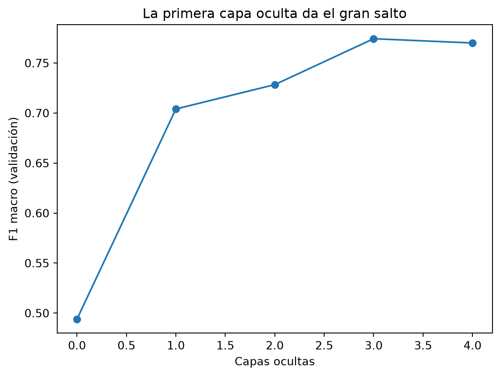
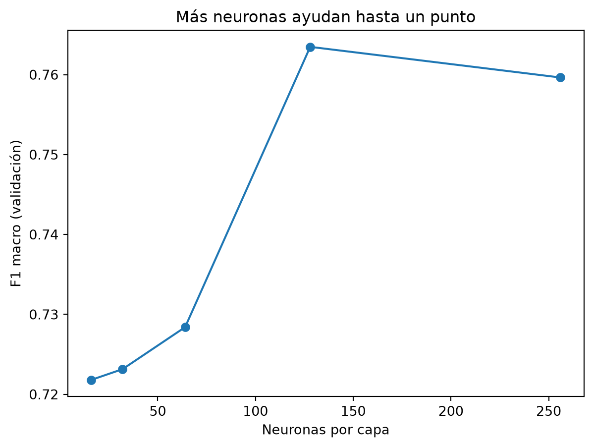
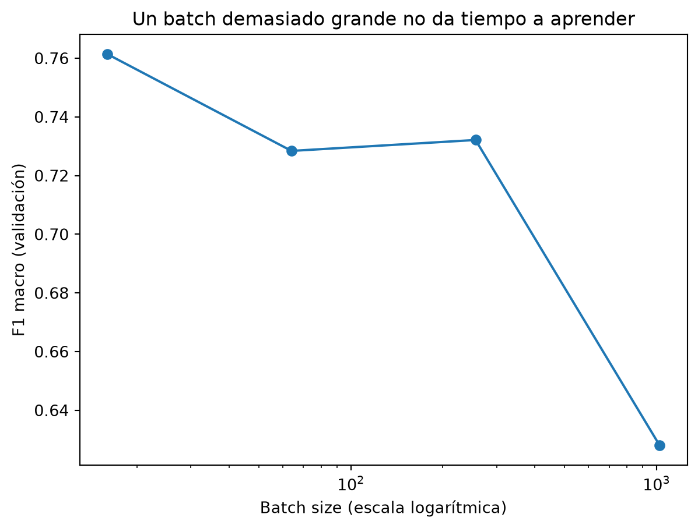
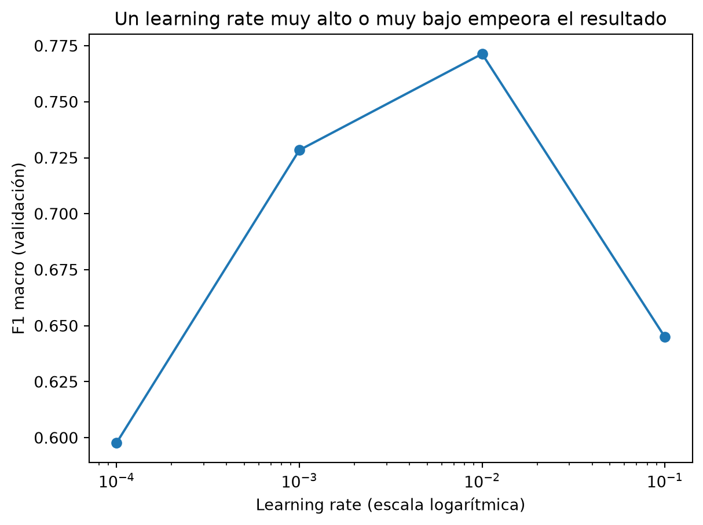
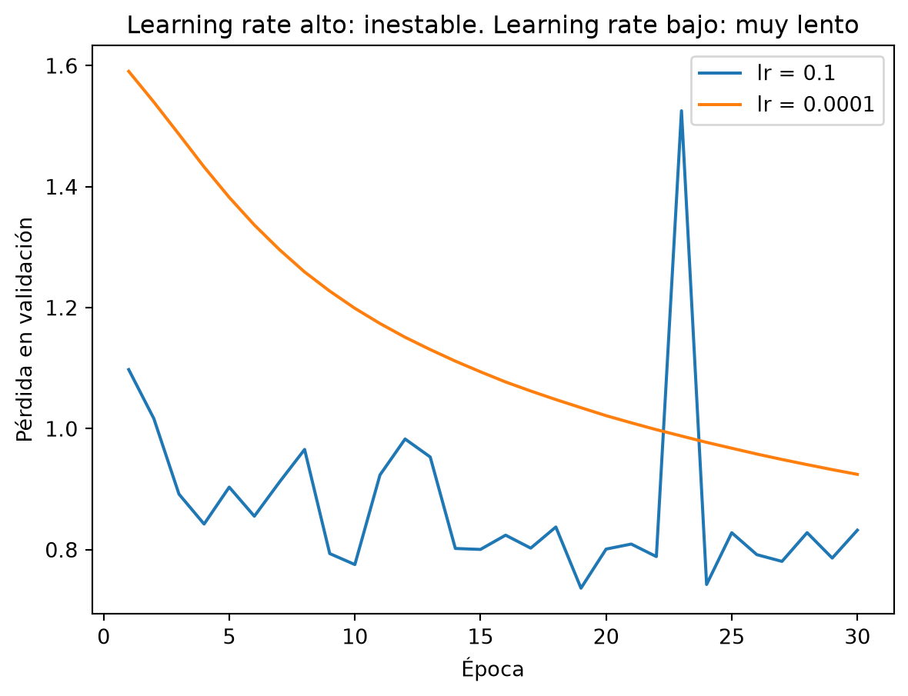
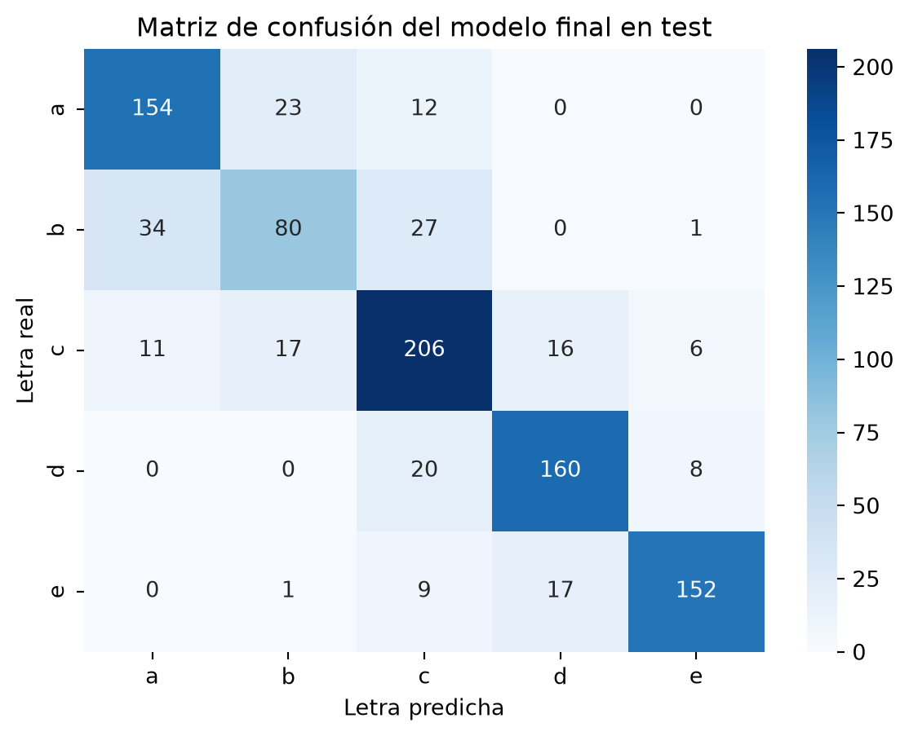

Partimos de una configuración de partida (2 capas ocultas, 64 neuronas, batch size 64 y learning rate 0,001) y cambiamos un parámetro cada vez, dejando los demás fijos. Si cambiáramos dos a la vez, no sabríamos cuál ha causado la mejora. Todas las configuraciones se comparan con el conjunto de validación; el de test queda para el final y se usa una sola vez, con la configuración ganadora.
Lista de configuraciones
Escribimos a mano las 15 configuraciones. La clave variando indica qué parámetro se ha cambiado en cada una.
Son 15 configuraciones, y cada una cambia un solo parámetro respecto a la de partida.
Ejecución
Para cada configuración creamos una red nueva, la entrenamos, medimos el tiempo y evaluamos en validación. Guardamos los resultados en un CSV, que luego lee la sección de conclusiones.
Cada fila es una configuración con su accuracy y su F1 macro en validación. El F1 es la métrica con la que comparamos, porque trata las cinco letras por igual.
Capas ocultas
Dibujamos el F1 en validación de las redes con 0, 1, 2, 3 y 4 capas ocultas, todas con 64 neuronas, batch size 64 y learning rate 0,001.
datos = tabla[tabla["variando"].isin(["capas", "partida"])].sort_values("capas")plt.plot(datos["capas"], datos["f1_val"], marker="o")plt.xlabel("Capas ocultas")plt.ylabel("F1 macro (validación)")plt.title("La primera capa oculta da el gran salto")plt.show()

Con 0 capas la red equivale a una regresión logística y se queda en un F1 de 0,494: una frontera lineal no basta, y eso justifica usar una red neuronal. Con una capa oculta sube a 0,704, con dos a 0,728 y con tres alcanza el máximo, 0,774. Con cuatro ya no mejora (0,770): la red empieza a ajustarse demasiado a los datos de entrenamiento.
Neuronas por capa
Ahora dejamos fijas las 2 capas ocultas y cambiamos el número de neuronas de cada capa.
datos = tabla[tabla["variando"].isin(["neuronas", "partida"])].sort_values("neuronas")plt.plot(datos["neuronas"], datos["f1_val"], marker="o")plt.xlabel("Neuronas por capa")plt.ylabel("F1 macro (validación)")plt.title("Más neuronas ayudan hasta un punto")plt.show()

Con 16 y 32 neuronas la red tiene poca capacidad (F1 de 0,722 y 0,723). Con 64 llega a 0,728 y con 128 mejora hasta 0,763. Con 256 se estanca (0,760): más neuronas ayudan hasta un punto.
Batch size
El batch size es el número de productos que mira la red antes de ajustar los pesos. Probamos 16, 64, 256 y 1024. El eje horizontal está en escala logarítmica porque cada valor es varias veces el anterior.
datos = tabla[tabla["variando"].isin(["batch_size", "partida"])].sort_values("batch_size")plt.plot(datos["batch_size"], datos["f1_val"], marker="o")plt.xscale("log")plt.xlabel("Batch size (escala logarítmica)")plt.ylabel("F1 macro (validación)")plt.title("Un batch demasiado grande no da tiempo a aprender")plt.show()

Con un batch pequeño (16) la red hace 278 ajustes por época en lugar de 70 y mejora hasta un F1 de 0,761, a cambio de tardar más. Con 256 se queda en 0,732, parecido a la configuración de partida. Con 1024 solo hace 5 ajustes por época y baja a 0,628: con 30 épocas no le da tiempo a aprender. No es que ese valor sea malo en sí, le faltan épocas.
Learning rate
El learning rate es el tamaño de cada ajuste de los pesos. Probamos cuatro valores, cada uno diez veces mayor que el anterior, y por eso el eje vuelve a ser logarítmico.
datos = tabla[tabla["variando"].isin(["lr", "partida"])].sort_values("lr")plt.plot(datos["lr"], datos["f1_val"], marker="o")plt.xscale("log")plt.xlabel("Learning rate (escala logarítmica)")plt.ylabel("F1 macro (validación)")plt.title("Un learning rate muy alto o muy bajo empeora el resultado")plt.show()

Con 0,0001 los pasos son tan pequeños que en 30 épocas la red no llega a aprender (F1 de 0,598). Con 0,1 son tan grandes que se pasa del punto bueno y no se estabiliza (0,645). El mejor valor es 0,01, con 0,771, por encima del 0,728 de la configuración de partida.
Curvas de los casos extremos
Volvemos a entrenar los dos casos extremos, cada uno con una red nueva, y dibujamos su pérdida de validación.
for lr in [0.1, 0.0001]: red = crear_red(capas_ocultas=2, neuronas=64) historial = entrenar(red, X_ent, y_ent, X_val, y_val, batch_size=64, lr=lr) plt.plot(historial["epoca"], historial["perdida_val"], label=f"lr = {lr}")plt.xlabel("Época")plt.ylabel("Pérdida en validación")plt.title("Learning rate alto: inestable. Learning rate bajo: muy lento")plt.legend()plt.show()

Con 0,1 la pérdida de validación sube al final: la red se vuelve inestable. Con 0,0001 baja, pero muy despacio y sin llegar a estabilizarse en 30 épocas.
Modelo final
Elegimos la configuración con mayor F1 en validación, la entrenamos de nuevo y la evaluamos una sola vez con el conjunto de test.
mejor = tabla.sort_values("f1_val", ascending=False).iloc[0]print(mejor)red = crear_red(capas_ocultas=int(mejor["capas"]), neuronas=int(mejor["neuronas"]))entrenar(red, X_ent, y_ent, X_val, y_val, batch_size=int(mejor["batch_size"]), lr=mejor["lr"])accuracy_test, f1_test, predicciones = evaluar(red, X_test, y_test)print(f"Test -> Accuracy: {accuracy_test:.3f} F1 macro: {f1_test:.3f}")matriz = confusion_matrix(y_test, predicciones)sns.heatmap(matriz, annot=True, fmt="d", cmap="Blues", xticklabels=list("abcde"), yticklabels=list("abcde"))plt.xlabel("Letra predicha")plt.ylabel("Letra real")plt.title("Matriz de confusión del modelo final en test")plt.show()
variando capas
capas 3
neuronas 64
batch_size 64
lr 0.001
accuracy_val 0.778594
f1_val 0.774301
segundos 0.713292
Name: 3, dtype: object
Test -> Accuracy: 0.788 F1 macro: 0.780

La configuración ganadora es la red de 3 capas ocultas de 64 neuronas, con batch size 64 y learning rate 0,001. En test obtiene un accuracy de 0,788 y un F1 macro de 0,780, casi igual que en validación (0,779 y 0,774). Por tanto, la elección generaliza bien y el resultado no se debe a haber probado muchas configuraciones sobre el mismo conjunto de validación.
En la matriz de confusión se ve que la red acierta 752 de los 954 productos de test, y que la mayoría de los errores (162 de 202, un 80 %) son entre letras vecinas. Frente al modelo base (F1 de 0,494 en validación), la red final mejora de forma clara, que es el argumento central del trabajo.